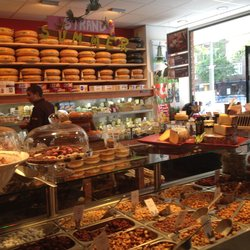

| Home | Things to do | Nightlife | Eating and drinking |
|
|||
Lombardo'sWow, believe the hype, the burger was spectacular. The meat (pork in this case) was thick and juicy and tasty, the bun was perfect, not too hard, not too soft, the relish in the burger was amazing! The fries were a bit of a let down, they were slightly undercooked and there weren’t many of them, at €4.50 I definitely won’t be ordering those again but the burgers will keep me coming back, many times. I can’t wait to try the lamb burger, the hangover burger and the sandwiches look amazing too! Lombardos is small and more of a take away place than somewhere to sit down although there are about 6 seats inside so you can eat there but it’s a bit of a squash. Expect to wait but it’s worth it! On the website is a number to call to order if you don’t want to wait. This is a perfect place to grab a burger or sandwich on the way to the museums to eat while you walk. |